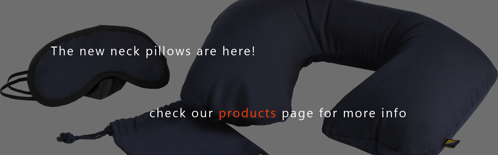
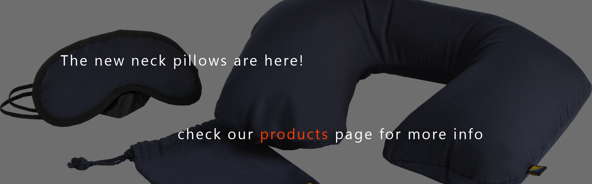
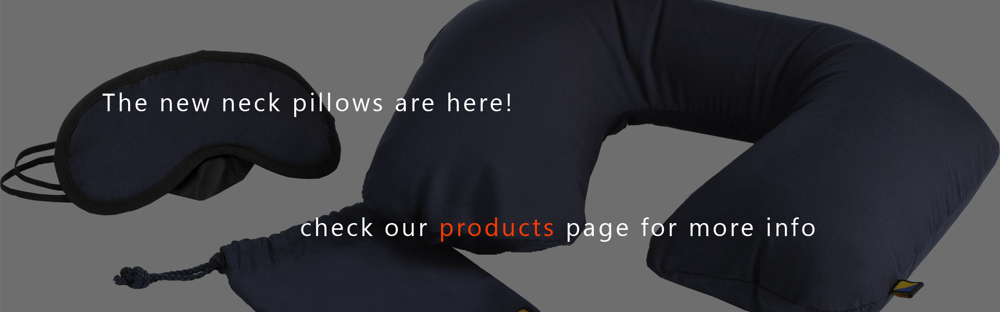
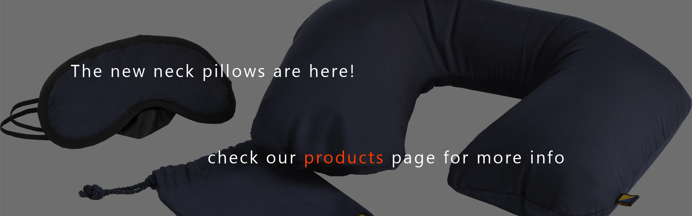
What we do
Chiropractic
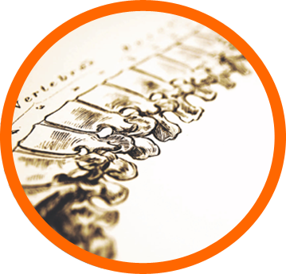Sport Therapy
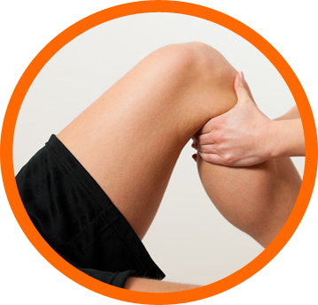Physiotherapy
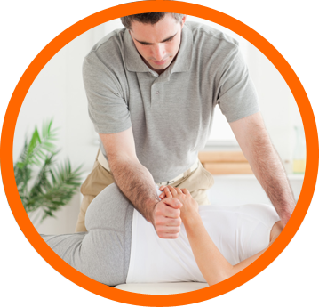Active Release Techniques
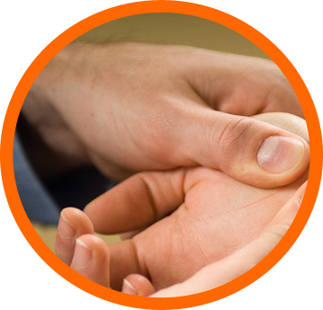GaitScan & Analysis
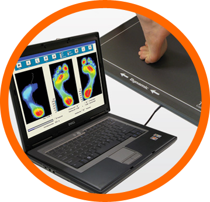See All Services
Our mission
At Elite Spinal & Sports Care® you will find an unparalleled combination of the most innovative treatment techniques with the basic principles and philosophy of Chiropractic. Patients can be assured that no matter what their condition, we are committed to providing the highest level of personalized care to help you achieve your wellness objectives. We strive to identify and correct the root cause of your musculoskeletal problem, rather than simply telling you to rest, ice or make attempts to mask the symptoms. In fact, in most cases we want you to keep exercising and doing the sport/activity you love as motion helps with the healing process.
“My injury left me with no chance of ever playing hockey again. Now, after being treated with ART and a proper rehabilitation program, I have completely regained my career in hockey.„
- Gary Roberts, NHL Forward
“My shoulder pain was from a recent injury from overdoing fitness efforts. I had tried stretching and pain relievers like Aspirin and Motrin. I was having troubles with activities like golf where flexibility is necessary. Golf and physical work would flare up my symptoms so my physician recommended Dr. Lau. Active Release was used in my treatment and it gave me relief within 6 sessions with the relief now lasting for months!„
- Jesph Munoz, Retired
“My shoulder was in really bad shape but thanks to Dr. Lau, he got me back to throwing 100% in only 3 weeks. Not only is his service good therapeutically, it is good in the reception area as well. Thank you for your treatments and getting me back up to speed!„
- Dwight Childs, Baseball Catcher
What sets us apart is our focus on the entire body, not just the spine. Specializing in extremity case management, we have been able to help patients not only for various spinal conditions, but also for issues involving the joints and soft tissues of the arms and legs. So whatever your personal condition, from headaches to low back pain, shin splints to carpal tunnel, you can be confident that Elite Spinal & Sports Care® is the right place for you!
Who we are
Dr. Justin Lau
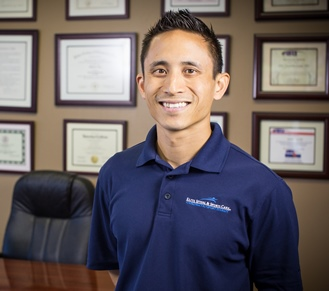Background:
Dr. Lau entered into the chiropractic health care field after a personal experience he had with extreme low back pain. While training for a full contact kickboxing tournament, he suffered a severe strain to his low back. After physical therapy and medical interventions did not resolve his pain or his condition, one of his students recommended Chiropractic. He was amazed to find that within a few treatments, he was out of pain and training again. It was the first time he was out of pain in over 6 months. From that point, he immediately made a career change. Originally on the academic route towards becoming a Physical Therapist, he was motivated by the power of the human body and the amazing level of healing the body can perform when allowed to do so without interference from outside sources.
Education:
Dr. Lau completed his undergraduate studies at the University of California in Davis, where he earned a bachelor's degree in Exercise Physiology. He then completed his doctoral studies at Palmer College of Chiropractic West where he graduated with Cum Laude honors. During his studies, he performed a 1-year internship with a well-recognized sports chiropractor, Nick Athens (chiropractor for the SF Giants currently and most of the 49ers from the 80's-early 90's) and continued onto a 9-month preceptorship with Dr's Matthew and Michael Janzen (chiropractors for Ultimate Fighting Champions, professional triathletes and Olympic medallists). Both of these clinics gave him the opportunity to work with high-level and elite athletes of all types.
Dr. Edward Chu
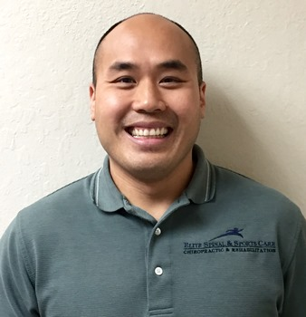Background:
Dr. Edward Chu is originally from the Washington D.C. Metropolitan Area where he participated in many different types of sports. From this aspect in his life is where he developed his passion for the way the human body would work and move. His first experience with a chiropractor occurred during these sporting moments. He found through chiropractic and sports rehabilitation he was able to get back onto the field faster and injury free. From that point on, Dr. Chu always knew that he wanted to be involved in the healthcare profession and give back to the sporting community just like the doctors who treated him. While attending the University of Maryland, he always excelled and favored classes that dealt with life and its function. During his undergraduate courses, he attained internships at the National Institute of Health (NIH) in Bethesda, MD and the Washington National Children's Hospital so that he could continue to learn about the aspects of healthcare. Due to his love for patient care and he decided to continue his pursuit for his Doctor of Chiropractic Degree at the Palmer Chiropractic College West, where he graduated in 2004. As a practitioner, he best describes himself as a movement specialist who is continuously working/learning to find the best solution for movement disorders of his patients, by addressing other movement patterns that may have been ignored.
Education:
Dr. Chu did his undergraduate studies at The University of Maryland, College Park as a premed/combined sciences major where he received his Bachelor of Science in 1999. After which, he attended the Palmer Chiropractic CollegeWest, where he developed a passion for the sports aspect of chiropractic care. He began mentoring under Dr. Steve Hickey (Chiropractor for the Pan Am Games and a Official Chiropractor for the U.S. Olympic Team). Afterwards, he continued his career as an associate with Dr. Matthew and Michael Janzen (Chiropractors for Fighters of Ultimate Fighting Champion, professional athletes/triathletes and Olympic medalists). With these experiences, Dr. Chu was able to develop his own philosophy that is based on rehabilitation and understanding mechanical laws that govern human bodies and its movement patterns.
Dr. Scott Saberniak
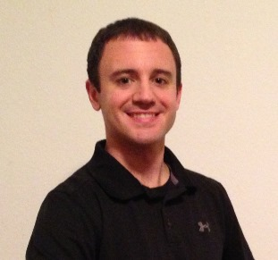Background:
Dr. Scott Saberniak is originally from Northwest Indiana and moved to California in 2009. Growing up as a student and a multi-sport athlete, he has always had a passion for learning about the human body and how it performs. Although he may not have known it at the time, he learned from his coaches at a young age how to move with efficiency. This quality that has made him an exceptional athlete and more importantly has enhanced his overall health and well-being today. Dr. Scott entered into the chiropractic profession with an in-depth knowledge about the study of human movement which he obtained from his undergraduate training and experience as an athlete. From his professional experience, he learned that if he applied the same principles of movement quality and efficiency that made him succeed as an athlete, to his patients, they healed quicker. He found that chronic pain such as tendonosis or even acute pain like an ankle sprain can be attributed to whole body weaknesses or subtle imbalances. After these poor movement abilities are identified in his patients, Dr. Scott begins to correct them with the assist of the appropriate soft tissue treatments, chiropractic therapy, and training proper movements. This process has proven to be the key to helping his patients become pain free and function at their full potential.
Education:
Dr. Scott completed his undergraduate studies at Indiana University, where he earned a bachelor’s of science degree in kinesiology. He then completed his doctoral studies at Palmer College of Chiropractic West in San Jose, CA. During his internship training, he mentored with the chiropractor of the San Jose Sharks professional hockey team. His professional career began at a multi-disciplinary practice in Fresno, CA where he had the opportunity to coordinate his care with physical therapists, medical doctors, and athletic trainers. Both of these clinics gave him the opportunity to work with a variety of patients.
How to find us
Contact Info
2041 Hallmark Drive, Suite 1
Sacramento, CA 95825
(V): 916-488-4849
(F): 916-929-3299
info@elitespinalcare.com
Office Hours
Mon: 8am - 5pm
Tue: 11am-6pm
Wed: 11am - 6pm
Thu: by Appointment Only
Fri: 8am - 5pm
Sat & Sun: Closed